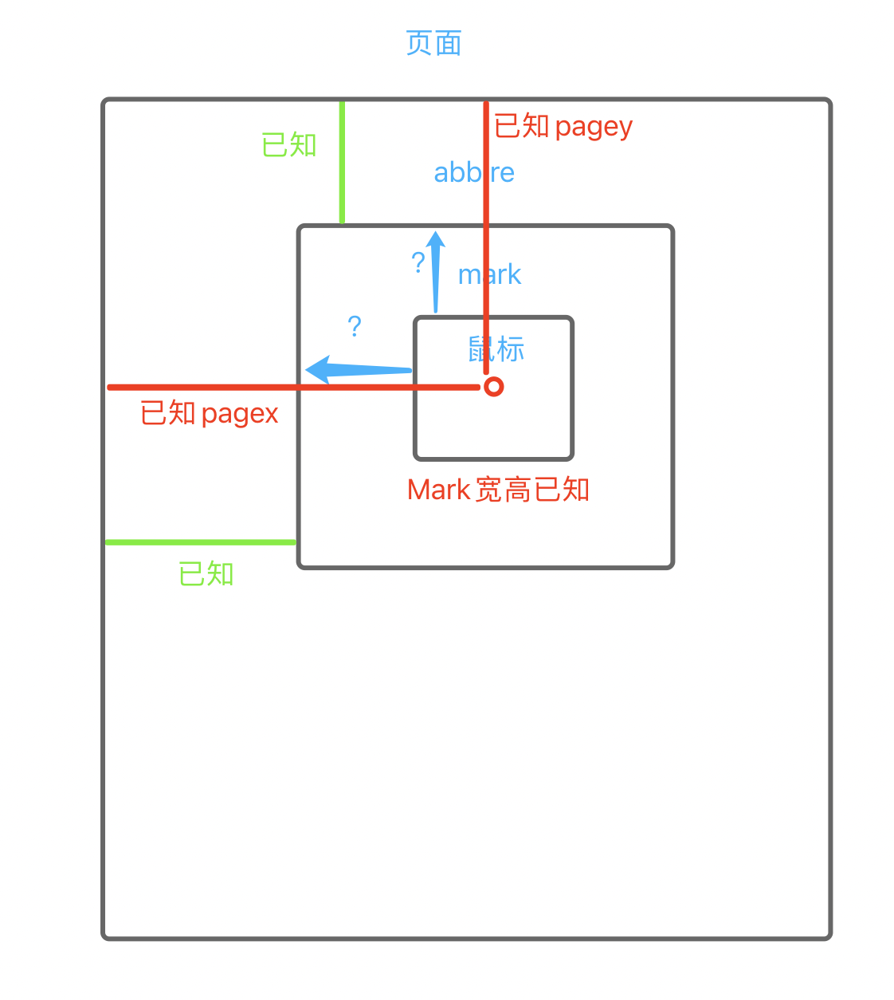

实现京东放大镜效果
放大镜
结构
1 | 1. 大体结构就是 一个大盒子里面有两个小盒子 |
1 |
|
思路
1 | 1. 首先我们鼠标进入到缩略图的时候 我们的mark 要现实出来 并且位置要在鼠标的中间 |
鼠标进入和离开
1 | 1.我们鼠标进入到我们的缩率图的时候 遮罩层 和 详情图 都要显示出来 |
1 | $(function(){ |
动态记录大图的大小
1 | 1. 我们要用关系比例 计算出 我们大图的大小 |
1 | $(function(){ |
鼠标控制mark 移动
1 | 1. mark 要是移动的话 我们首先要知道 鼠标的位置 |

1 | $(function(){ |
大图移动
1 | 1. 我们的mark 移动多少 大图就移动多少 |
1 | //5.动态计算mark移动的距离 和 大图移动的位置 |
地址
1 | 1. https://github.com/wazer1987/magnifier |
相关推荐

公告
感谢访问本站，如喜欢请收藏。本站主要分享前端知识，立志成为资深前端工程师，但目前是一个前端界的小学生 若喜欢可以打赏请博主喝一杯冰阔落
另外请大家多多支持淼哥的开源项目
https://github.com/flipped-aurora/gin-vue-admin
🌟🌟欢迎大家start 🌟🌟
欢迎加入博主的前端技术交流群